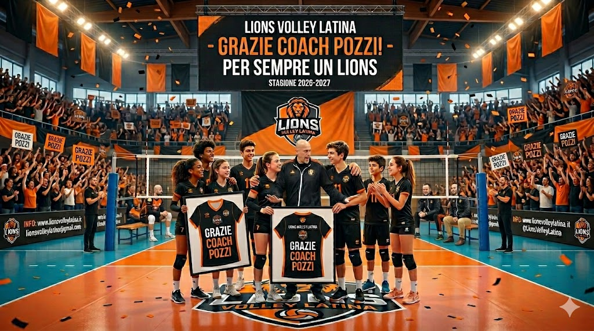

Grazie di tutto Coach Pozzi: si chiude un'era in casa Lions

Non è mai facile trovare le parole giuste per salutare chi ha cambiato la storia di una società. Dopo numerose stagioni indimenticabili, le strade della Lions Volley Latina e di Coach Pozzi si dividono.
Arrivato in un momento delicato, il Coach ha saputo ricostruire non solo una squadra, ma un'intera identità societaria. Sotto la sua guida, i Lions hanno raggiunto traguardi che sembravano impossibili, culminati con la storica cavalcata verso la Serie C e il consolidamento del nostro settore giovanile.
"I Lions non sono solo una squadra, sono una famiglia. Lascio un pezzo di cuore a Latina, ma so che questi ragazzi continueranno a ruggire." - Le ultime parole del Coach
Un'eredità indelebile
Oltre ai risultati sul campo, ciò che resterà per sempre è l'insegnamento umano. Coach Pozzi ha cresciuto decine di atleti, trasmettendo loro la cultura del lavoro, il rispetto per l'avversario e l'orgoglio di indossare questi colori.
La società, lo staff e tutti i tifosi ringraziano profondamente l'uomo e l'allenatore per la professionalità, la passione e l'amicizia dimostrata in questi anni. La porta del PalaLions per te sarà sempre aperta.
In bocca al lupo per la tua nuova avventura, Coach!